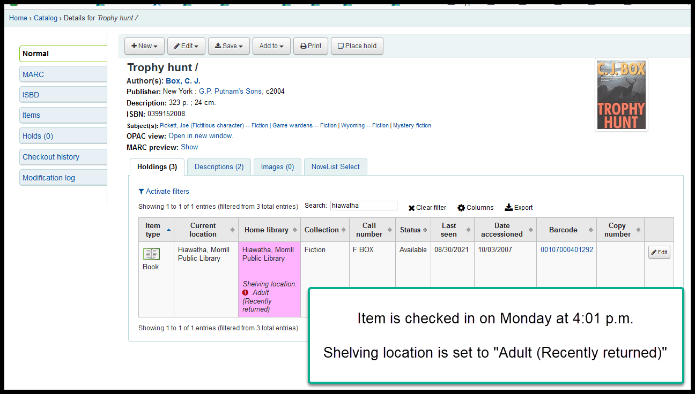
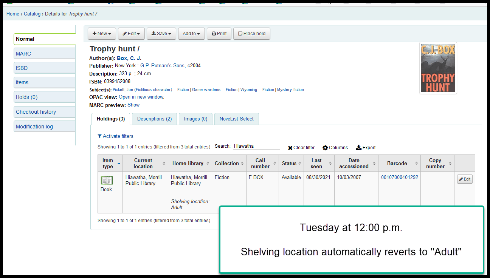

Timeline for “Recently returned” shelving location¶
“Recently returned” is a shelving location we turned on during the COVID-19 pandemic and it relies on the Koha system preference “UpdateItemLocationOnCheckin” (see https://koha-community.org/manual/latest/en/html/circulationpreferences.html#updateitemlocationoncheckin ) and the In processing/book cart cron job (see https://koha-community.org/manual/latest/en/html/cron_jobs.html#cron-in-processing-book-cart-label)
The advantage of using this feature is that is helps indicate in the catalog that an item was returned recently so it may not have been reshelved yet. Currently we have the threshold for this feature set to 18 hours.
The current timeline is as follows:
- An item is checked in
- The shelving location of the item is immediately updated to “Recently returned”
- The permanent shelving locaiton of the item remains unchanged
- Every even numbered hour, on the hour, the “In processing/book cart” cron job runs and looks for items that have had a “Recently returned” shelving location for more than 18 hours - when it finds them, it sets the item’s shelving location to match the permanent shelving location
Here are two screen shots as examples:


During the early days of the pandemic, the “In processing/book cart” cron job was set for 96 hours instead of 18.